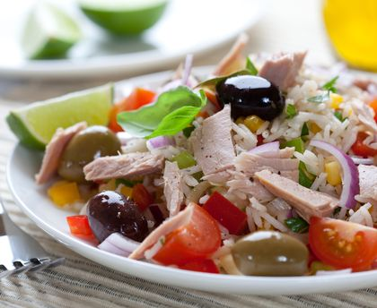

Tajine de lotte

- 500 g de riz blanc ou (aromatisé)
- 200 g de thon au naturel
- 2 tomates
- é cuilliere a soupred' olive verte
- 2 oeufs durs
- 300 g de maïs
- 2 cuillères à soupe d'huile de noix
- 1 cuillère à soupe de vinaigre de xérès
- 1 pincée de curry
- Poivre
- Sel
- Cuire le riz à l'eau bouillante salée.
- Une fois cuit, le rincer à l'eau froide pour enlever l'amidon.
- Quand le riz est froid, ajouter les oeufs coupés en lamelles, les tomates en dés, les olives, le maïs et le thon en miettes.
- Réserver au réfrigérateur puis servir frais.